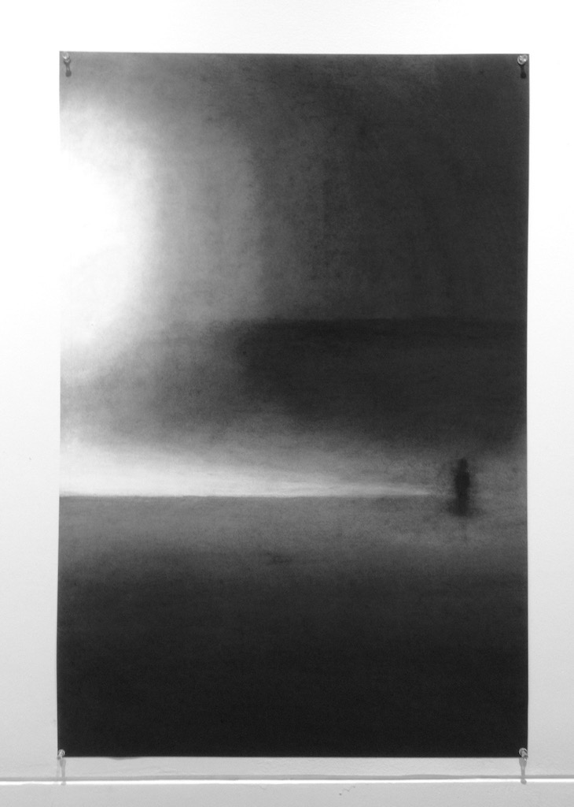
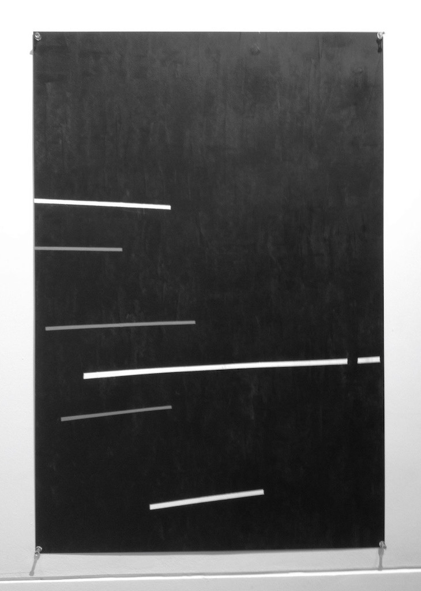
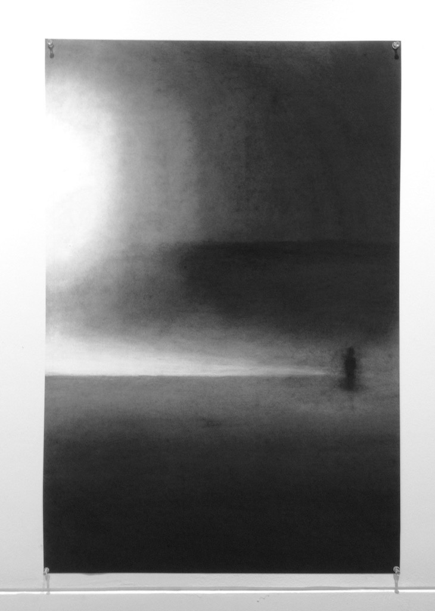
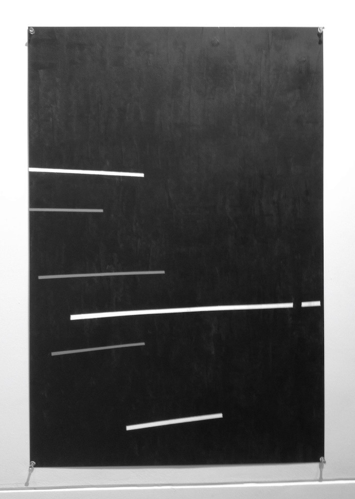
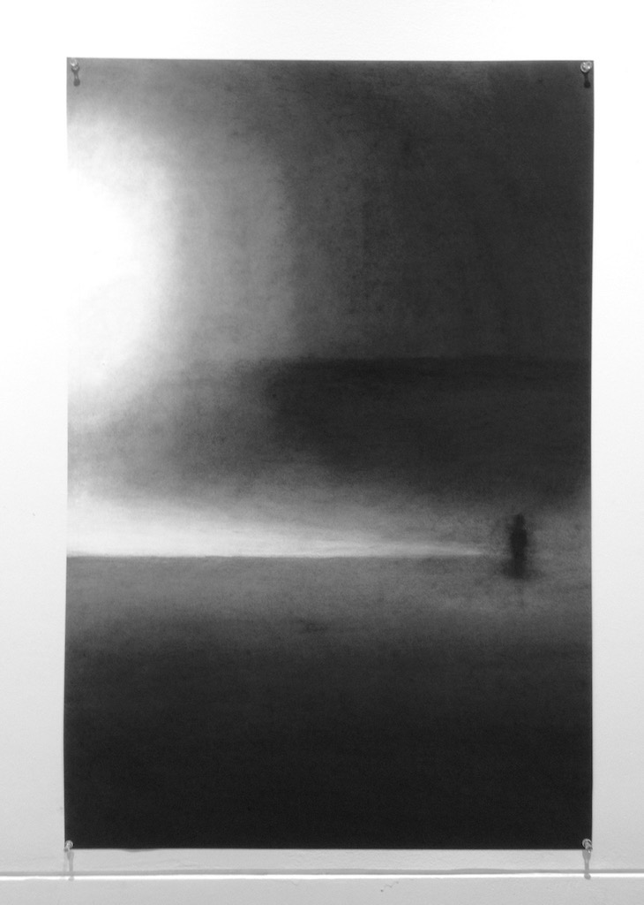
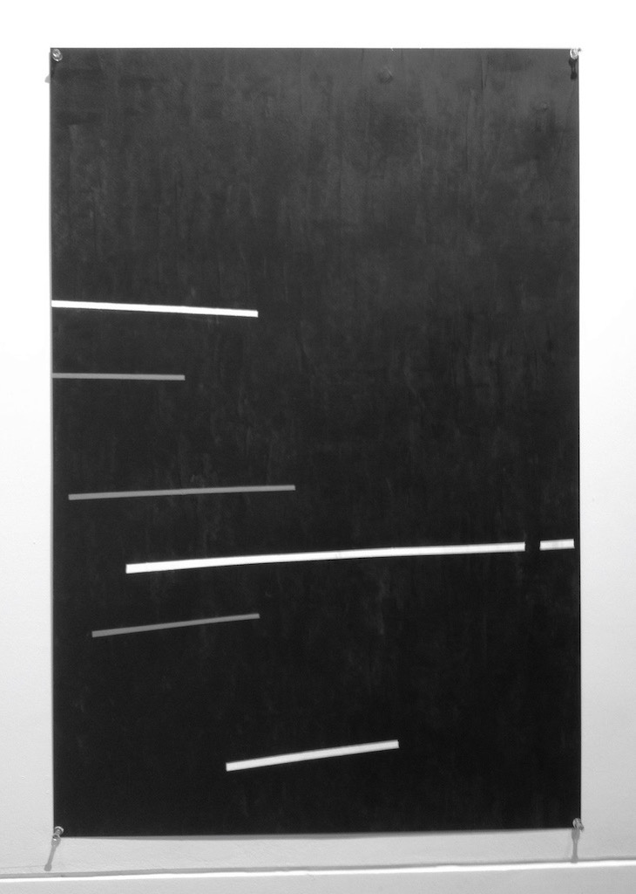

Fall 2014
Acrylic or charcoal on canvas paper.
This series of images began as a set of 300 or so photographs that I took several years ago over a six month period. After going back to them recently I was struck by how different they were from my experience, yet only in the smallest of details. The result is somewhere in between the visual fidelity of the photographs and the abstraction of my own memory, crystalized into a handful of images that best conveyed the visual impact that I remembered. This project was also a bit of an experiment in minimalism, using as few visual elements as possible to create depth and keep each image interesting in its own right.

